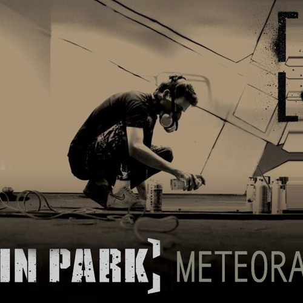
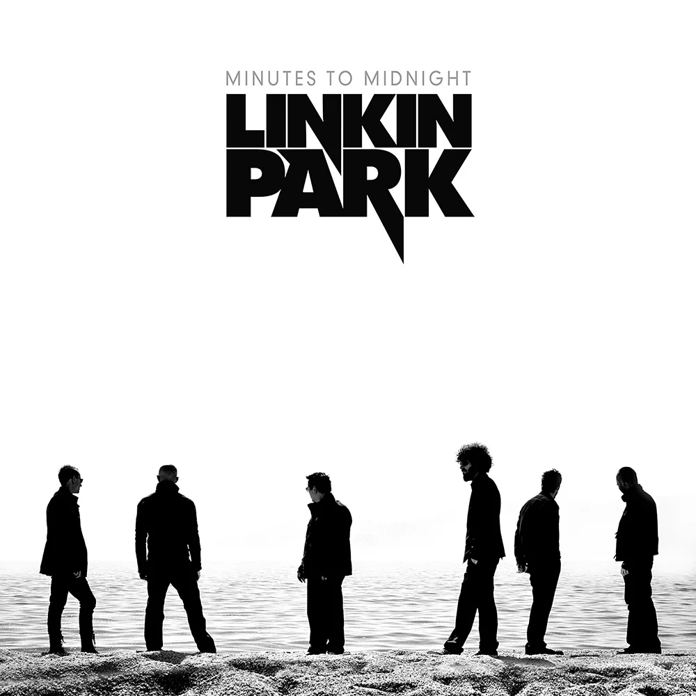
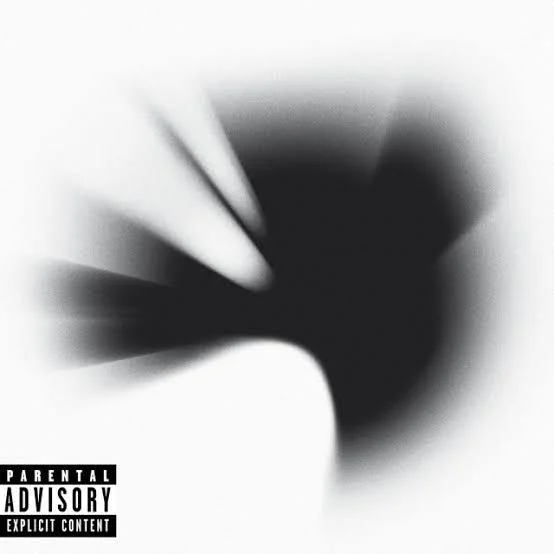
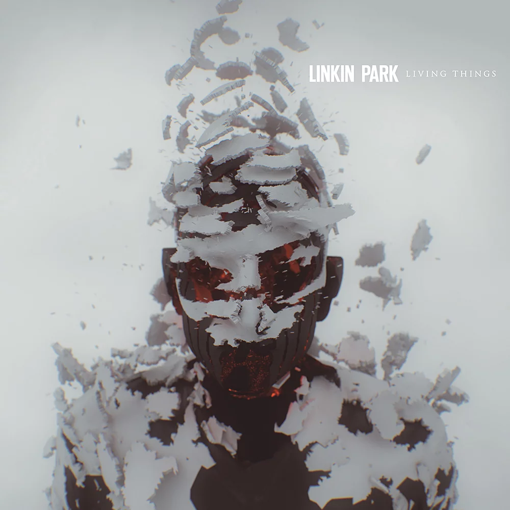
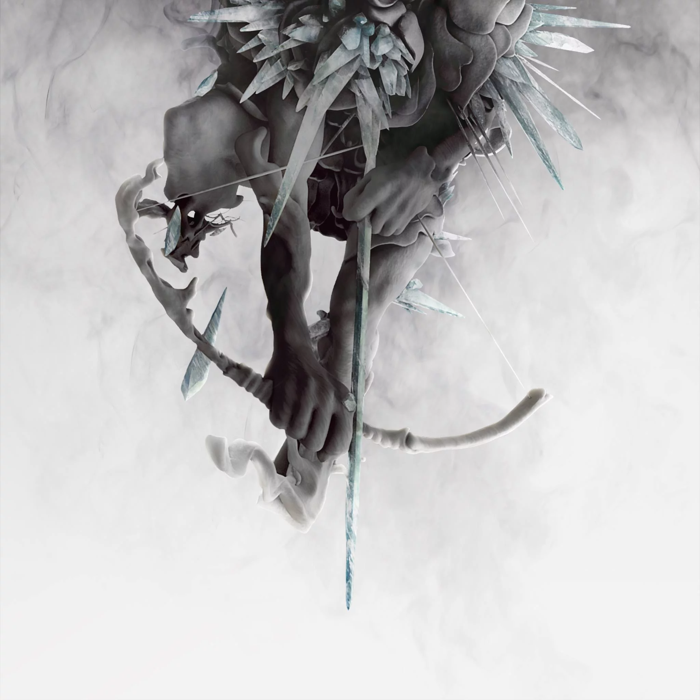
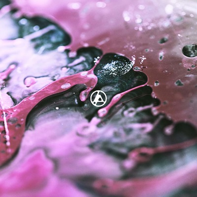

Com a participação da nova integrante do grupo, Emilly Armstrong, a banda lança seu álbum de número 8 e os fãs ficam animados com a conitnuidade da banda.
Após sete anos de silêncio nos estúdios, o Linkin Park está de volta com o lançamento de From Zero, seu oitavo álbum de estúdio. Divulgado oficialmente no dia 15 de novembro de 2024, o novo trabalho marca uma nova fase na trajetória da banda, misturando a essência do nu metal que consagrou o grupo com elementos mais experimentais e letras intensas que dialogam com temas como superação, identidade e renascimento.
A repercussão entre os fãs foi imediata. Nas redes sociais, milhares de postagens celebraram o retorno da banda, que agora conta com novos integrantes: a vocalista Emily Armstrong e o baterista Colin Brittain. A presença de Armstrong nos vocais — a primeira mulher a integrar oficialmente o grupo — surpreendeu positivamente os admiradores, que elogiaram sua performance emotiva e potente.
Apesar da ausência insubstituível de Chester Bennington, vocalista original falecido em 2017, os integrantes remanescentes deixaram claro que From Zero não se trata de apagar o passado, mas de continuar a história com respeito e coragem. “É uma carta aberta aos nossos sentimentos, aos nossos fãs e ao que a música ainda significa para nós”, declarou Mike Shinoda, em entrevista recente.
Com composições que alternam entre a fúria melódica e momentos de introspecção, From Zero já ocupa o topo das paradas de streaming e reacende o entusiasmo em torno de uma das bandas mais influentes do início dos anos 2000. Se depender da reação dos fãs, o Linkin Park ainda tem muito o que dizer.
Confira as músicas do novo álbum:
- From Zero (Intro) – 0:22
- The Emptiness Machine – 3:10
- Cut the Bridge – 3:48
- Heavy Is the Crown – 2:47
- Over Each Other – 2:50
- Casualty – 2:20
- Overflow – 3:31
- Two Faced – 3:03
- Stained – 3:05
- IGYEIH – 3:29
- Good Things Go – 3:29
- Up From the Bottom – 3:03
- Unshatter – 3:16
- Let You Fade – 3:28
Ouça agora a primeira música do álbum:
Veja a discografia completa da banda
| Nome do álbum | Ano de lançamento | Capa |
|---|---|---|
| Hybrid Theory | 2000 |  |
| Meteora | 2003 |  |
| Minutes to Midnight | 2007 |  |
| A Thousand Suns | 2010 |  |
| Living Things | 2012 |  |
| The Hunting Party | 2014 |  |
| One More Light | 2017 | |
| From Zero | 2024 |  |